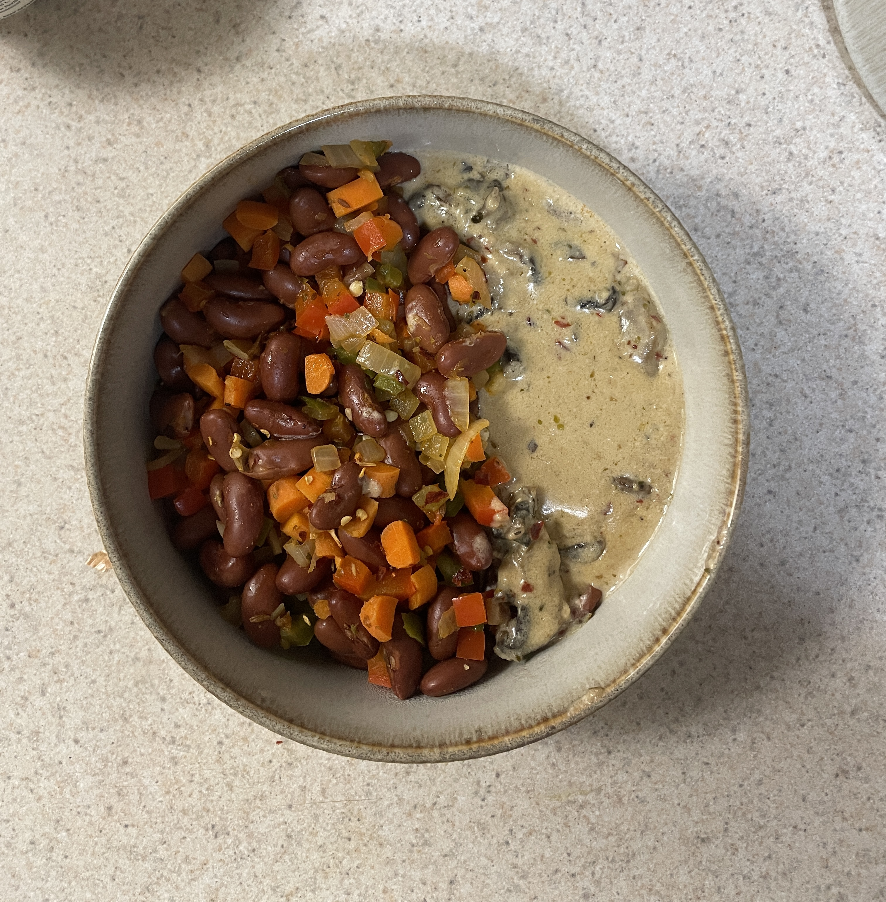
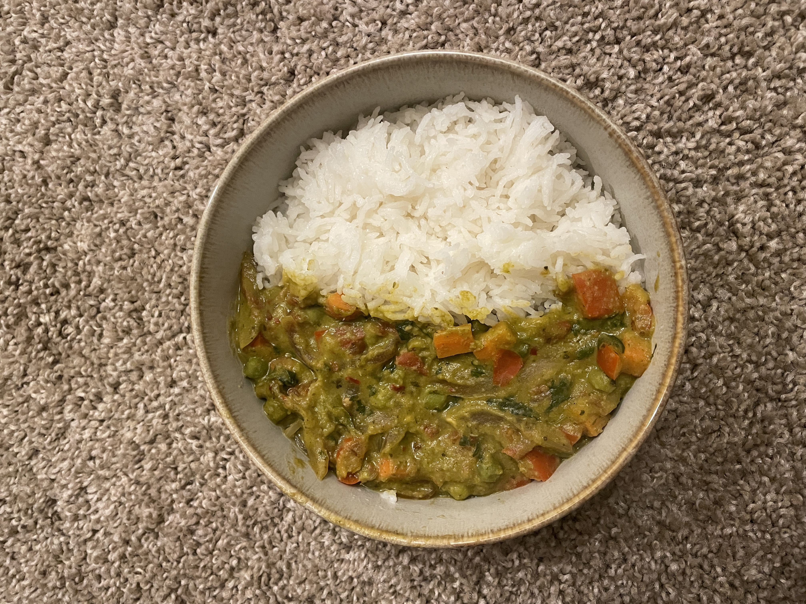
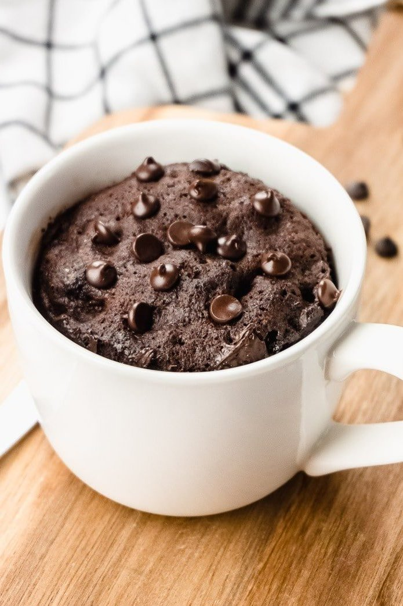

Contents
- Kidney Bean Salad with Cream of Mushroom on side
- Aglio e Olio
- Spinach rice with yogurt curry
- Thai curry with rice
- Chocolate Mug Cake

Kidney Bean Salad with Cream of Mushroom on side
Ingredients:
- Kidney beans - 2 cups, cooked
- Onions, carrots, peppers - diced
- Cream sauce - 1 cup
- Basic spices
- Cream of mushroom
Instructions:
- Sauté vegetables until soft
- Add beans and cream sauce
- Simmer for 10 minutes
- Season and serve hot

Aglio e Olio
Ingredients:
- Spaghetti - 250g
- Garlic - 6 cloves, sliced and Red chili flakes - 1 tsp
- Parsley - 2 tbsp, chopped and Salt and pepper to taste
Instructions:
- Cook spaghetti in salted water until al dente. Reserve 1 cup of pasta water before draining.
- Sauté garlic in olive oil until golden
- Add chili flakes and cooked pasta
- Toss with parsley, salt, and pepper

Spinach rice with yogurt curry
Ingredients:
- Green spinach paste
- Yogurt with masalas and spices
- 2 cloves garlic and onions, minced
- 1 cup rice
Instructions:
- Cook rice with added green color
- Simmer curry paste with yogurt
- Stir in chili powder, cumin, and tomato sauce. Simmer for 10 minutes.
- Serve curry around green rice

Thai curry with rice
Ingredients:
- Green curry paste - 2 tbsp
- Coconut milk - 1 can
- 1 carrot, julienned
- Mixed vegetables
- Rice - 2 cups
Instructions:
- Cook rice
- Simmer curry paste with coconut milk
- Add vegetables and cook
- Serve green curry with rice

Chocolate Mug Cake
Ingredients:
- 4 tbsp all-purpose flour
- 4 tbsp sugar
- 2 tbsp cocoa powder
- 1 egg
- 1/4 tsp vanilla extract
Instructions:
- In a microwave-safe mug, mix flour, sugar, and cocoa powder.
- Add egg and mix well. Stir in milk, oil, and vanilla extract.
- Microwave on high for 1-2 minutes, or until the cake is cooked through.